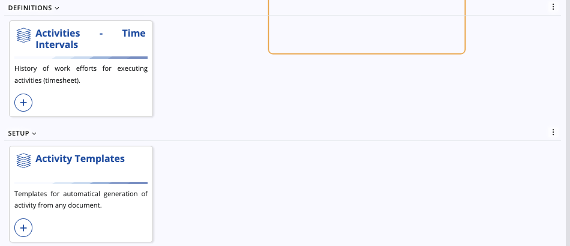
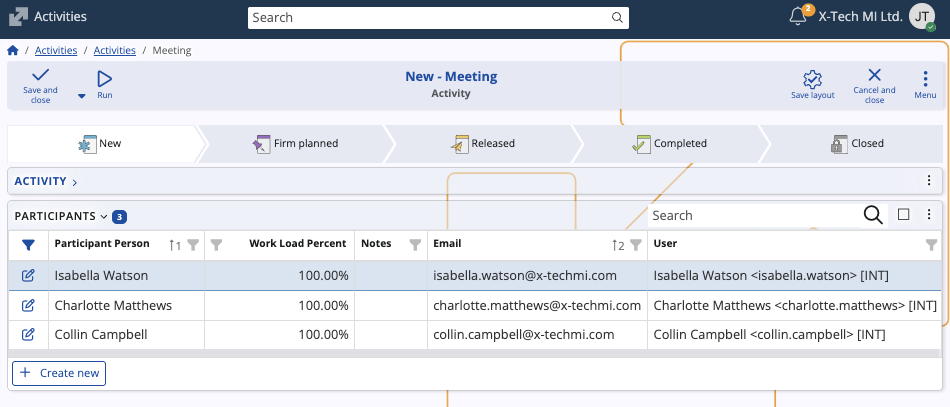

Activities
Activities in ERP.net are documents providing flexible task and event tracking for people and teams. They can represent meetings, calls, appointments, leave, tasks, and any other user-defined document types.
The Activities submodule centralizes planning and execution details: who is responsible, when it happens, what it is about, and who participates. Activities are integrated with other modules like Presales where they help manage communication and follow-ups with leads and opportunities.
Note
Activities appear in the ERP.net Calendar and can also be created from there.
Structure
The page consists of three panels, out of which Activities is the main list and editor for all activity documents.

The Time Intervals panel records time spent per activity, while the Activity Templates panel defines reusable defaults and automation for generating activities from documents elsewhere in ERP.net.

Activity data
If you open the Activities panel, you can find the following information for each activity:
- System Type – Categorizes the activity at system level (e.g., Meeting, Task).
- Subject, Notes – Title and description of the activity.
- Target Party - External participant or target of the activity/task.
- Responsible Party - Party responsible for the execution of the activity/task. By default, this is the Owner, but it can be changed.
- Owner Party – The Party that created the activity document/task.
- Priority - Importance level of the activity.
- Private – Decides whether the activity is public or visible only to its owner.
- Start Time, End Time – Date/time span of the activity.
- Reminder Time, Deadline Time – Optional scheduling helpers determining a reminder and a deadline for the activity/task.
- Contact Person - A person who can be contacted; from the side of the target party.
- Planned Duration Minutes - Total planned duration of the activity. Calculated automatically based on Start Time & End Time.
- Project Task - Optional link of the activity to a project task.
- Social Group - Optional link of the activity to a social group.
- Assigned To User – User to which the activity document is assigned (This allows the activity to appear in their Calendar).

Participants
Activities can optionally have specific participants, with each of them contributing a certain Work Load Percent.
Marking someone as a participant automatically leads to the activity appearing in their personal calendars.
Create an activity
You can create activities from the Activities panel:
Click New and choose a Document Type. This preselects the System Type.

Enter basic activity details such as Subject and Notes and any scheduling fields like Start Time, End Time, Reminder/Deadline Time.

Add Participants if applicable.

Click Save and close to save the new activity.
Tip
You can also create activities directly from the Calendar. Read this short guide to learn how.

Note
The screenshots taken for this article are from v.26 of the platform.